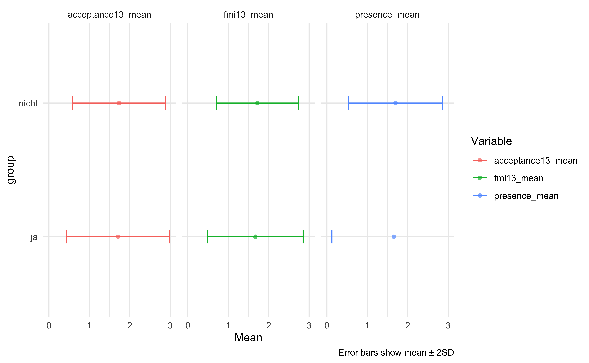
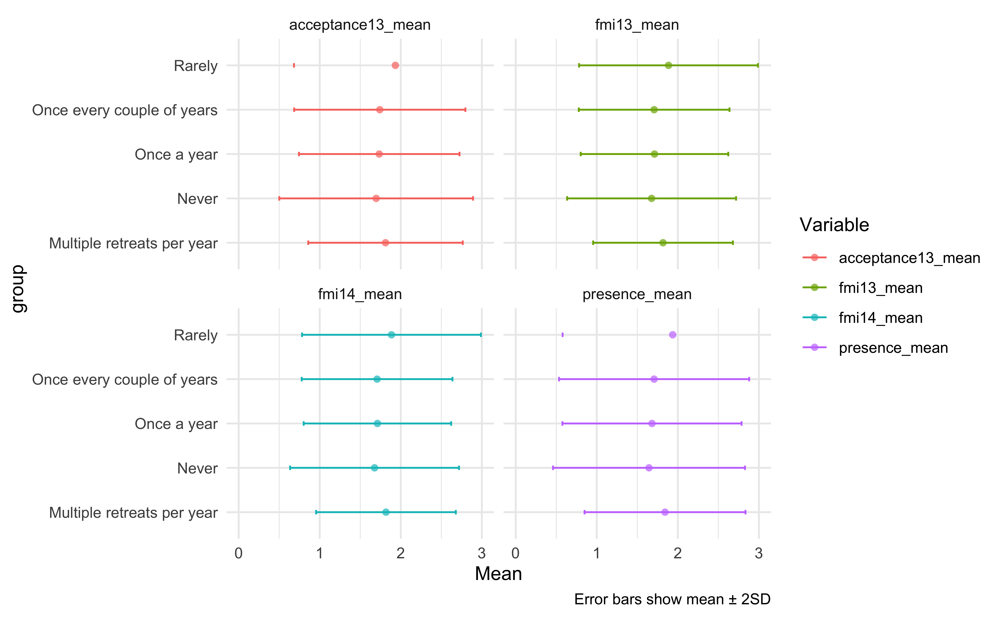
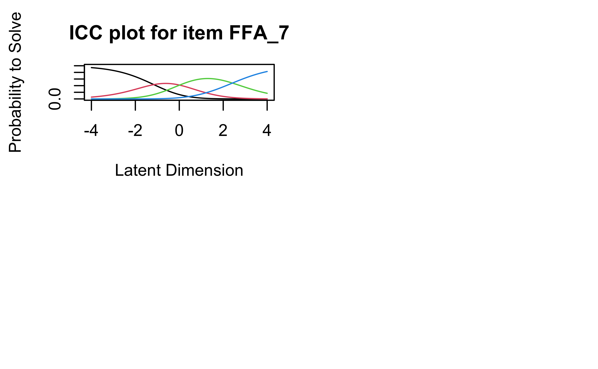

library(easystats) # convinient stats
library(here) # path hell
library(eRm) # Rasch models
library(mirt) # more IRT
library(MASS) # stats
library(lordif) # DIF
library(tidyverse) # data wrangling
library(psych) # factor analysis
library(lavaan) # CFAs
library(semPlot) # SEM plotsFFA Rasch Modelling
1 Setup
1.1 Import FFA data
d_filename <- "Achtsamkeit_Daten_FFAEichung_rekodiert_2.sav"
d <- data_read(here("raw-data", d_filename))1.2 Median split
d2 <-
d %>%
filter(Geschlecht != "divers") %>%
mutate(Geschlecht = as.character(Geschlecht)) %>%
mutate(PHQ_medsplit = ifelse(PHQ_Sum >= median(PHQ_Sum), 1, 0),
Alter_medsplit = ifelse(Alter >= median(Alter), 1, 0))Yes, only two cases of sex “divers”.
1.3 Check
Can we drop “diverse” sex without loosing much data?
d %>%
count(Geschlecht) Geschlecht n
1 männlich 495
2 weiblich 515
3 divers 22 Prepare data
2.1 Select FFA items
ffa_items <-
d2 %>%
dplyr::select(starts_with("FFA_"))2.2 Recode
ffa_items2 <-
ffa_items %>%
mutate(across(.cols = everything(),
.fns = ~ case_when(. == "fast nie" ~ 0,
. == "eher selten" ~ 1,
. == "relativ oft" ~ 2,
. == "fast immer" ~ 3)))2.3 Check
ffa_items2 %>%
describe_distribution()Variable | Mean | SD | IQR | Range | Skewness | Kurtosis | n | n_Missing
---------------------------------------------------------------------------------------
FFA_1 | 1.91 | 0.85 | 1 | [0.00, 3.00] | -0.52 | -0.24 | 1010 | 0
FFA_2 | 1.51 | 0.89 | 1 | [0.00, 3.00] | -7.47e-03 | -0.73 | 1010 | 0
FFA_3 | 1.42 | 0.86 | 1 | [0.00, 3.00] | 0.02 | -0.66 | 1010 | 0
FFA_4 | 1.89 | 0.85 | 2 | [0.00, 3.00] | -0.40 | -0.48 | 1010 | 0
FFA_5 | 1.84 | 0.83 | 1 | [0.00, 3.00] | -0.44 | -0.28 | 1010 | 0
FFA_6 | 1.80 | 0.82 | 1 | [0.00, 3.00] | -0.29 | -0.43 | 1010 | 0
FFA_7 | 1.78 | 0.84 | 1 | [0.00, 3.00] | -0.39 | -0.36 | 1010 | 0
FFA_8 | 1.84 | 0.77 | 1 | [0.00, 3.00] | -0.29 | -0.27 | 1010 | 0
FFA_9 | 1.71 | 0.84 | 1 | [0.00, 3.00] | -0.26 | -0.47 | 1010 | 0
FFA_10 | 1.72 | 0.85 | 1 | [0.00, 3.00] | -0.29 | -0.49 | 1010 | 0
FFA_11 | 1.74 | 0.84 | 1 | [0.00, 3.00] | -0.28 | -0.47 | 1010 | 0
FFA_12 | 1.54 | 0.86 | 1 | [0.00, 3.00] | -0.07 | -0.65 | 1010 | 0
FFA_13_rek | 1.67 | 0.90 | 1 | [0.00, 3.00] | -0.15 | -0.76 | 1010 | 0
FFA_14 | 1.60 | 0.84 | 1 | [0.00, 3.00] | -0.14 | -0.54 | 1010 | 02.4 FFA-13
ffa13_items <-
ffa_items2 %>%
dplyr::select(-FFA_13_rek)
dim(ffa13_items)[1] 1010 133 IRT Models FFA13 - one factor model
3.1 Rating Scale Model (RSM)
ffa_rsm1 <- RSM(ffa_items2, se = FALSE)
ffa_rsm1_ppar <- person.parameter(ffa_rsm1)This model does not run, throws error due to singularity in matrix.
3.2 Partial Credit Model (PCM)
3.2.1 Estimate parameters
3.2.1.1 FFA-14: 14 items
ffa_pcm1 <- PCM(ffa_items2)
thresholds(ffa_pcm1)
Design Matrix Block 1:
Location Threshold 1 Threshold 2 Threshold 3
FFA_1 0.26067 -0.94317 -0.22598 1.95115
FFA_2 0.91626 -0.67573 0.88345 2.54106
FFA_3 1.12831 -0.57636 0.99342 2.96786
FFA_4 0.22817 -1.21454 0.03671 1.86234
FFA_5 0.36060 -1.02959 -0.07687 2.18827
FFA_6 0.34979 -1.37675 0.17527 2.25084
FFA_7 0.48002 -0.93762 0.05186 2.32582
FFA_8 0.22446 -1.71550 0.02947 2.35943
FFA_9 0.58029 -1.04322 0.30623 2.47786
FFA_10 0.58014 -0.92527 0.26003 2.40568
FFA_11 0.50785 -1.09032 0.25214 2.36172
FFA_12 0.88470 -0.77655 0.76261 2.66804
FFA_13_rek 0.62526 -0.85574 0.59710 2.13443
FFA_14 0.76323 -0.99528 0.59661 2.68836ffa_pcm1_ppar <- person.parameter(ffa_pcm1)
ffa_pcm1_ppar
Person Parameters:
Raw Score Estimate Std.Error
3 -2.47563019 0.6110641
4 -2.14746247 0.5393721
5 -1.88288301 0.4918666
6 -1.65803307 0.4580168
7 -1.46010308 0.4327927
8 -1.28138631 0.4134650
9 -1.11680549 0.3984023
10 -0.96292147 0.3865766
11 -0.81719887 0.3772888
12 -0.67766802 0.3700483
13 -0.54286015 0.3645077
14 -0.41157499 0.3604056
15 -0.28277307 0.3575391
16 -0.15562456 0.3557542
17 -0.02941778 0.3549217
18 0.09649900 0.3549390
19 0.22270913 0.3557148
20 0.34973478 0.3571744
21 0.47802889 0.3592494
22 0.60799865 0.3618793
23 0.74004711 0.3650126
24 0.87456811 0.3686113
25 1.01192106 0.3726488
26 1.15244051 0.3771211
27 1.29648521 0.3820526
28 1.44448274 0.3875043
29 1.59695652 0.3935906
30 1.75455113 0.4004877
31 1.91808584 0.4084536
32 2.08866648 0.4178543
33 2.26786312 0.4292056
34 2.45792067 0.4432464
35 2.66204174 0.4610582
36 2.88497992 0.4843112
37 3.13422277 0.5157722
38 3.42238345 0.5604822
39 3.77318878 0.6289827
40 4.23992101 0.7486760
41 4.99249392 1.0290806
42 5.81436949 NAffa_pcm1_itemfit <- eRm::itemfit(ffa_pcm1_ppar)
ffa_pcm1_itemfit
Itemfit Statistics:
Chisq df p-value Outfit MSQ Infit MSQ Outfit t Infit t Discrim
FFA_1 1012.904 1002 0.398 1.010 0.979 0.231 -0.458 0.522
FFA_2 1074.782 1002 0.054 1.072 1.051 1.684 1.226 0.492
FFA_3 1066.561 1002 0.077 1.063 1.064 1.504 1.535 0.470
FFA_4 849.198 1002 1.000 0.847 0.850 -3.647 -3.707 0.614
FFA_5 758.503 1002 1.000 0.756 0.767 -5.965 -5.809 0.667
FFA_6 784.800 1002 1.000 0.782 0.798 -5.439 -5.081 0.646
FFA_7 746.182 1002 1.000 0.744 0.762 -6.368 -6.000 0.677
FFA_8 959.878 1002 0.826 0.957 0.952 -0.985 -1.113 0.517
FFA_9 796.610 1002 1.000 0.794 0.799 -5.140 -5.073 0.648
FFA_10 770.208 1002 1.000 0.768 0.777 -5.836 -5.705 0.665
FFA_11 749.025 1002 1.000 0.747 0.756 -6.436 -6.277 0.676
FFA_12 795.992 1002 1.000 0.794 0.799 -5.295 -5.210 0.650
FFA_13_rek 2651.416 1002 0.000 2.643 1.855 27.010 16.750 -0.021
FFA_14 979.859 1002 0.686 0.977 0.951 -0.536 -1.184 0.538This model shows a bad fit.
3.2.1.2 FFA-13: 13 item
ffa_pcm2 <- PCM(ffa13_items)
ffa_pcm2_ppar <- person.parameter(ffa_pcm2)
ffa_pcm2_itemfit2 <- eRm::itemfit(ffa_pcm2_ppar)
ffa_pcm2_itemfit2
Itemfit Statistics:
Chisq df p-value Outfit MSQ Infit MSQ Outfit t Infit t Discrim
FFA_1 1128.015 985 0.001 1.144 1.062 3.009 1.371 0.492
FFA_2 1147.431 985 0.000 1.164 1.111 3.635 2.568 0.472
FFA_3 1134.305 985 0.001 1.150 1.129 3.355 2.973 0.446
FFA_4 952.263 985 0.768 0.966 0.935 -0.761 -1.540 0.579
FFA_5 805.340 985 1.000 0.817 0.822 -4.313 -4.279 0.644
FFA_6 837.713 985 1.000 0.850 0.859 -3.613 -3.399 0.619
FFA_7 776.805 985 1.000 0.788 0.800 -5.089 -4.886 0.662
FFA_8 1041.978 985 0.101 1.057 1.030 1.280 0.687 0.482
FFA_9 868.430 985 0.997 0.881 0.878 -2.820 -2.931 0.611
FFA_10 804.569 985 1.000 0.816 0.829 -4.447 -4.193 0.643
FFA_11 822.820 985 1.000 0.835 0.833 -3.987 -4.085 0.638
FFA_12 838.186 985 1.000 0.850 0.856 -3.665 -3.579 0.625
FFA_14 1042.183 985 0.100 1.057 1.019 1.309 0.457 0.5093.2.2 Overall Goodness of Fit
#gofIRT(ffa_pcm2_ppar) # not implemented for polytomuous models yet
#item_info(ffa_pcm2)3.2.3 Andersen test
Significant results indicate that the exercise parameter differ significantly between the two groups.
LRtest(ffa_pcm2) # nicht so gut
Andersen LR-test:
LR-value: 168.57
Chi-square df: 35
p-value: 0 LRtest(ffa_pcm2, d2$Evang) # ok
Andersen LR-test:
LR-value: 57.32
Chi-square df: 38
p-value: 0.023 LRtest(ffa_pcm2, d2$Theorie) # nicht so gut
Andersen LR-test:
LR-value: 119.295
Chi-square df: 38
p-value: 0 LRtest(ffa_pcm2, d2$PHQ_medsplit) # nicht so gut
Andersen LR-test:
LR-value: 253.068
Chi-square df: 38
p-value: 0 3.2.4 Wald Test
Waldtest(ffa_pcm2)
Wald test on item level (z-values):
z-statistic p-value
beta FFA_1.c1 4.506 0.000
beta FFA_1.c2 3.313 0.001
beta FFA_1.c3 1.406 0.160
beta FFA_2.c1 1.703 0.089
beta FFA_2.c2 -0.342 0.732
beta FFA_2.c3 0.099 0.921
beta FFA_3.c1 3.435 0.001
beta FFA_3.c2 2.098 0.036
beta FFA_3.c3 0.842 0.400
beta FFA_4.c1 -0.097 0.922
beta FFA_4.c2 -0.894 0.371
beta FFA_4.c3 -1.318 0.187
beta FFA_5.c1 0.021 0.984
beta FFA_5.c2 -1.239 0.215
beta FFA_5.c3 -2.135 0.033
beta FFA_7.c1 -0.063 0.950
beta FFA_7.c2 -1.739 0.082
beta FFA_7.c3 -2.886 0.004
beta FFA_8.c1 4.104 0.000
beta FFA_8.c2 2.937 0.003
beta FFA_8.c3 2.192 0.028
beta FFA_9.c1 1.163 0.245
beta FFA_9.c2 -0.938 0.348
beta FFA_9.c3 -1.972 0.049
beta FFA_10.c1 2.395 0.017
beta FFA_10.c2 0.048 0.962
beta FFA_10.c3 -0.583 0.560
beta FFA_11.c1 1.771 0.077
beta FFA_11.c2 -0.710 0.478
beta FFA_11.c3 -1.462 0.144
beta FFA_12.c1 -1.497 0.134
beta FFA_12.c2 -3.005 0.003
beta FFA_12.c3 -3.033 0.002
beta FFA_14.c1 2.537 0.011
beta FFA_14.c2 1.072 0.284
beta FFA_14.c3 0.952 0.341Waldtest(ffa_pcm2, d2$PHQ_medsplit)
Wald test on item level (z-values):
z-statistic p-value
beta FFA_1.c1 0.280 0.779
beta FFA_1.c2 1.678 0.093
beta FFA_1.c3 2.732 0.006
beta FFA_2.c1 -4.512 0.000
beta FFA_2.c2 -5.186 0.000
beta FFA_2.c3 -6.045 0.000
beta FFA_3.c1 -5.622 0.000
beta FFA_3.c2 -7.385 0.000
beta FFA_3.c3 -6.354 0.000
beta FFA_4.c1 0.652 0.514
beta FFA_4.c2 2.637 0.008
beta FFA_4.c3 3.856 0.000
beta FFA_5.c1 -1.845 0.065
beta FFA_5.c2 -1.191 0.234
beta FFA_5.c3 -1.043 0.297
beta FFA_6.c1 0.561 0.575
beta FFA_6.c2 1.790 0.074
beta FFA_6.c3 1.669 0.095
beta FFA_7.c1 -2.465 0.014
beta FFA_7.c2 -1.011 0.312
beta FFA_7.c3 0.112 0.911
beta FFA_8.c1 0.129 0.897
beta FFA_8.c2 -0.393 0.694
beta FFA_8.c3 0.431 0.667
beta FFA_9.c1 0.605 0.545
beta FFA_9.c2 3.150 0.002
beta FFA_9.c3 4.208 0.000
beta FFA_10.c1 -2.569 0.010
beta FFA_10.c2 -1.876 0.061
beta FFA_10.c3 -1.783 0.075
beta FFA_11.c1 0.270 0.787
beta FFA_11.c2 2.763 0.006
beta FFA_11.c3 3.017 0.003
beta FFA_12.c1 1.119 0.263
beta FFA_12.c2 2.903 0.004
beta FFA_12.c3 2.149 0.032
beta FFA_14.c1 1.156 0.248
beta FFA_14.c2 2.015 0.044
beta FFA_14.c3 0.817 0.4143.2.5 MLoef Test
MLoef(ffa_pcm2) # good
Martin-Loef-Test (split criterion: median)
LR-value: 378.543
Chi-square df: 377
p-value: 0.468 3.2.6 Item information
plotINFO(ffa_pcm2, legpos = FALSE)Error in plot.new(): figure margins too largeplotPImap(ffa_pcm2)
4 Two factor model
4.1 Devise factors
Items were assigned according to Sauer et al., 2013.
presence_factor <- c(1, 2, 3, 5, 7)
acceptance_factor <- c(4, 6, 8, 9, 10, 11, 12, 14)ffa13_pres <-
ffa_items2 %>%
dplyr::select(any_of(presence_factor))
ffa13_acc <-
ffa_items2 %>%
dplyr::select(any_of(acceptance_factor))4.2 Check distributions
ffa13_pres %>%
describe_distribution()Variable | Mean | SD | IQR | Range | Skewness | Kurtosis | n | n_Missing
-------------------------------------------------------------------------------------
FFA_1 | 1.91 | 0.85 | 1 | [0.00, 3.00] | -0.52 | -0.24 | 1010 | 0
FFA_2 | 1.51 | 0.89 | 1 | [0.00, 3.00] | -7.47e-03 | -0.73 | 1010 | 0
FFA_3 | 1.42 | 0.86 | 1 | [0.00, 3.00] | 0.02 | -0.66 | 1010 | 0
FFA_5 | 1.84 | 0.83 | 1 | [0.00, 3.00] | -0.44 | -0.28 | 1010 | 0
FFA_7 | 1.78 | 0.84 | 1 | [0.00, 3.00] | -0.39 | -0.36 | 1010 | 0ffa13_acc %>%
describe_distribution()Variable | Mean | SD | IQR | Range | Skewness | Kurtosis | n | n_Missing
------------------------------------------------------------------------------------
FFA_4 | 1.89 | 0.85 | 2 | [0.00, 3.00] | -0.40 | -0.48 | 1010 | 0
FFA_6 | 1.80 | 0.82 | 1 | [0.00, 3.00] | -0.29 | -0.43 | 1010 | 0
FFA_8 | 1.84 | 0.77 | 1 | [0.00, 3.00] | -0.29 | -0.27 | 1010 | 0
FFA_9 | 1.71 | 0.84 | 1 | [0.00, 3.00] | -0.26 | -0.47 | 1010 | 0
FFA_10 | 1.72 | 0.85 | 1 | [0.00, 3.00] | -0.29 | -0.49 | 1010 | 0
FFA_11 | 1.74 | 0.84 | 1 | [0.00, 3.00] | -0.28 | -0.47 | 1010 | 0
FFA_12 | 1.54 | 0.86 | 1 | [0.00, 3.00] | -0.07 | -0.65 | 1010 | 0
FFA_14 | 1.60 | 0.84 | 1 | [0.00, 3.00] | -0.14 | -0.54 | 1010 | 04.3 Any categories not chosen?
Let’s check if any category was not chosen at all, which may cause the model to fail according to this source.
ffa13_acc %>%
pivot_longer(everything(), names_to = "item", values_to = "category") %>%
count(item, category, sort = TRUE)# A tibble: 32 × 3
item category n
<chr> <dbl> <int>
1 FFA_8 2 514
2 FFA_6 2 477
3 FFA_11 2 469
4 FFA_9 2 469
5 FFA_10 2 467
6 FFA_4 2 453
7 FFA_14 2 436
8 FFA_12 2 401
9 FFA_12 1 357
10 FFA_14 1 341
# … with 22 more rowsHowever, there appear to be no category with zero count.
5 RSM
5.1 Presence
5.1.1 Parameter estimation
ffa_rsm1_pres <- RSM(ffa13_pres, se = TRUE)
ffa_rsm1_pres
Results of RSM estimation:
Call: RSM(X = ffa13_pres, se = TRUE)
Conditional log-likelihood: -3195.759
Number of iterations: 18
Number of parameters: 6
Item (Category) Difficulty Parameters (eta):
FFA_2 FFA_3 FFA_5 FFA_7 Cat 2 Cat 3
Estimate 0.39599666 0.58536426 -0.32090754 -0.18635947 1.41513967 5.0277889
Std.Err 0.04180639 0.04274221 0.04263715 0.04196558 0.08641274 0.1740857ffa_rsm1_pres_ppar <- person.parameter(ffa_rsm1_pres)5.1.2 Itemfit
eRm::itemfit(ffa_rsm1_pres_ppar)
Itemfit Statistics:
Chisq df p-value Outfit MSQ Infit MSQ Outfit t Infit t Discrim
FFA_1 883.502 971 0.979 0.909 0.927 -2.093 -1.697 0.477
FFA_2 819.184 971 1.000 0.843 0.823 -3.866 -4.429 0.538
FFA_3 847.283 971 0.998 0.872 0.859 -3.123 -3.500 0.472
FFA_5 771.695 971 1.000 0.794 0.793 -5.018 -5.082 0.550
FFA_7 735.241 971 1.000 0.756 0.751 -6.071 -6.260 0.589Looks good.
5.1.3 Andersen test
A significant results indicates that the item parameters differ between groups, which indicates a violation of the Rasch model’s assumption.
LRtest(ffa_rsm1_pres) # sign.
Andersen LR-test:
LR-value: 25.923
Chi-square df: 6
p-value: 0 LRtest(ffa_rsm1_pres, d2$Evang) # sign
Andersen LR-test:
LR-value: 15.57
Chi-square df: 6
p-value: 0.016 LRtest(ffa_rsm1_pres, d2$Theorie) # sign
Andersen LR-test:
LR-value: 42.911
Chi-square df: 6
p-value: 0 #PHQ_medsplit <- ifelse(d$PHQ_Sum >= median(d$PHQ_Sum), "+", "-")
LRtest(ffa_rsm1_pres, d2$PHQ_medsplit) # sign
Andersen LR-test:
LR-value: 113.556
Chi-square df: 6
p-value: 0 5.1.4 Wald Test
The Wald Tests computes the difference in item difficulty normalized to their SE between two groups.
A significant results indicates that the item parameters differ between groups, which indicates a violation of the Rasch model’s assumption.
Waldtest(ffa_rsm1_pres) # sign mostly
Wald test on item level (z-values):
z-statistic p-value
beta FFA_1.c1 -0.507 0.612
beta FFA_1.c2 -4.207 0.000
beta FFA_1.c3 -4.032 0.000
beta FFA_2.c1 -1.989 0.047
beta FFA_2.c2 -4.861 0.000
beta FFA_2.c3 -4.421 0.000
beta FFA_3.c1 0.879 0.379
beta FFA_3.c2 -3.266 0.001
beta FFA_3.c3 -3.070 0.002
beta FFA_5.c1 0.538 0.591
beta FFA_5.c2 -3.687 0.000
beta FFA_5.c3 -3.551 0.000
beta FFA_7.c1 1.061 0.289
beta FFA_7.c2 -3.432 0.001
beta FFA_7.c3 -3.306 0.001Waldtest(ffa_rsm1_pres, d2$PHQ_medsplit) # signif mostly
Wald test on item level (z-values):
z-statistic p-value
beta FFA_1.c1 5.445 0.000
beta FFA_1.c2 6.955 0.000
beta FFA_1.c3 6.557 0.000
beta FFA_2.c1 -4.458 0.000
beta FFA_2.c2 -0.527 0.598
beta FFA_2.c3 -0.139 0.889
beta FFA_3.c1 -5.848 0.000
beta FFA_3.c2 -1.506 0.132
beta FFA_3.c3 -0.951 0.342
beta FFA_5.c1 1.324 0.185
beta FFA_5.c2 3.671 0.000
beta FFA_5.c3 3.509 0.000
beta FFA_7.c1 3.341 0.001
beta FFA_7.c2 5.111 0.000
beta FFA_7.c3 4.704 0.0005.1.5 MLOEF Test
The M Loef tests checks whether the person parameter differ between items. According to the assumptions of the Rasch models, we expect invariance, i.e., there should be not subset of items for which the person parameters differ from the rest of the items.
MLoef(ffa_rsm1_pres) # signif
Martin-Loef-Test (split criterion: median)
LR-value: 124.152
Chi-square df: 53
p-value: 0 5.1.6 Item information
plotINFO(ffa_rsm1_pres, legpos = FALSE)Error in plot.new(): figure margins too largeplotPImap(ffa_rsm1_pres)
5.2 Acceptance
5.2.1 Parameter estimation
This does NOT Run:
ffa_rsm1_acc <- RSM(ffa13_acc, se = TRUE)
ffa_rsm1_acc
ffa_rsm1_acc_ppar <- person.parameter(ffa_rsm1_acc)Oh no: NaNs have been produced. There must be some edge cases in the data.
5.2.2 Itemfit
eRm::itemfit(ffa_rsm1_acc_ppar)5.2.3 Itemfit
eRm::itemfit(ffa_rsm1_pres_ppar)
Itemfit Statistics:
Chisq df p-value Outfit MSQ Infit MSQ Outfit t Infit t Discrim
FFA_1 883.502 971 0.979 0.909 0.927 -2.093 -1.697 0.477
FFA_2 819.184 971 1.000 0.843 0.823 -3.866 -4.429 0.538
FFA_3 847.283 971 0.998 0.872 0.859 -3.123 -3.500 0.472
FFA_5 771.695 971 1.000 0.794 0.793 -5.018 -5.082 0.550
FFA_7 735.241 971 1.000 0.756 0.751 -6.071 -6.260 0.5895.2.4 Andersen test
A significant results indicates that the item parameters differ between groups, which indicates a violation of the Rasch model’s assumption.
LRtest(ffa_rsm1_acc) # does not runError in LRtest(ffa_rsm1_acc): object 'ffa_rsm1_acc' not foundLRtest(ffa_rsm1_acc, d2$Evang) # signError in LRtest(ffa_rsm1_acc, d2$Evang): object 'ffa_rsm1_acc' not foundLRtest(ffa_rsm1_acc, d2$Theorie) # signError in LRtest(ffa_rsm1_acc, d2$Theorie): object 'ffa_rsm1_acc' not found#PHQ_medsplit <- ifelse(d$PHQ_Sum >= median(d$PHQ_Sum), "+", "-")
LRtest(ffa_rsm1_acc, d2$PHQ_medsplit) # signError in LRtest(ffa_rsm1_acc, d2$PHQ_medsplit): object 'ffa_rsm1_acc' not found5.2.5 Wald Test
The Wald Tests computes the difference in item difficulty normalized to their SE between two groups.
A significant results indicates that the item parameters differ between groups, which indicates a violation of the Rasch model’s assumption.
This function yields error (singular matrix).
#Waldtest(ffa_rsm1_acc) # sign mostly
#Waldtest(ffa_rsm1_acc, d2$PHQ_medsplit) # signif mostly5.2.6 MLOEF Test
The M Loef tests checks whether the person parameter differ between items. According to the assumptions of the Rasch models, we expect invariance, i.e., there should be not subset of items for which the person parameters differ from the rest of the items.
MLoef(ffa_rsm1_acc) # signifError in MLoef(ffa_rsm1_acc): object 'ffa_rsm1_acc' not found5.2.7 Item information
plotINFO(ffa_rsm1_acc, legpos = FALSE)Error in get_item_cats(X = ermobject$X, nitems = dim(ermobject$X)[2], : object 'ffa_rsm1_acc' not foundplotPImap(ffa_rsm1_acc)Error in plotPImap(ffa_rsm1_acc): object 'ffa_rsm1_acc' not found5.3 Conclusion
The RSM is not appropriate for the data for some reason that is not entirely clear.
6 PCM
6.1 Presence
6.1.1 Parameter estimation
ffa_pcm1_pres <- PCM(ffa13_pres, se = TRUE)
ffa_pcm1_pres
Results of PCM estimation:
Call: PCM(X = ffa13_pres, se = TRUE)
Conditional log-likelihood: -3183.913
Number of iterations: 31
Number of parameters: 14
Item (Category) Difficulty Parameters (eta):
FFA_1.c2 FFA_1.c3 FFA_2.c1 FFA_2.c2 FFA_2.c3 FFA_3.c1
Estimate -1.4679274 0.5501084 -0.8282963 0.04465034 2.7220750 -0.7154672
Std.Err 0.1357334 0.1471584 0.1050176 0.11326886 0.1570351 0.1001023
FFA_3.c2 FFA_3.c3 FFA_5.c1 FFA_5.c2 FFA_5.c3 FFA_7.c1
Estimate 0.2742468 3.4297143 -1.2716971 -1.3931592 0.8767761 -1.1587477
Std.Err 0.1108744 0.1704769 0.1424045 0.1338912 0.1498455 0.1334806
FFA_7.c2 FFA_7.c3
Estimate -1.1452605 1.2737425
Std.Err 0.1275336 0.1494924ffa_pcm1_pres_ppar <- person.parameter(ffa_pcm1_pres)6.1.2 Itemfit
eRm::itemfit(ffa_pcm1_pres_ppar)
Itemfit Statistics:
Chisq df p-value Outfit MSQ Infit MSQ Outfit t Infit t Discrim
FFA_1 856.206 971 0.997 0.881 0.890 -2.719 -2.540 0.477
FFA_2 801.639 971 1.000 0.825 0.806 -4.375 -4.907 0.538
FFA_3 874.078 971 0.988 0.899 0.894 -2.444 -2.585 0.472
FFA_5 773.795 971 1.000 0.796 0.795 -4.903 -4.965 0.550
FFA_7 738.222 971 1.000 0.759 0.755 -5.917 -6.092 0.589Quite good.
6.1.3 Andersen test
A significant results indicates that the item parameters differ between groups, which indicates a violation of the Rasch model’s assumption.
LRtest(ffa_pcm1_pres) # sign.
Andersen LR-test:
LR-value: 34.352
Chi-square df: 14
p-value: 0.002 LRtest(ffa_pcm1_pres, d2$Evang) # NOT sign
Andersen LR-test:
LR-value: 20.603
Chi-square df: 14
p-value: 0.112 LRtest(ffa_pcm1_pres, d2$Theorie) # sign
Andersen LR-test:
LR-value: 54.516
Chi-square df: 14
p-value: 0 #PHQ_medsplit <- ifelse(d$PHQ_Sum >= median(d$PHQ_Sum), "+", "-")
LRtest(ffa_pcm1_pres, d2$PHQ_medsplit) # sign
Andersen LR-test:
LR-value: 123.54
Chi-square df: 14
p-value: 0 6.1.4 Wald Test
The Wald Tests computes the difference in item difficulty normalized to their SE between two groups.
A significant results indicates that the item parameters differ between groups, which indicates a violation of the Rasch model’s assumption.
Waldtest(ffa_pcm1_pres) # mostly NOT signif
Wald test on item level (z-values):
z-statistic p-value
beta FFA_1.c1 3.305 0.001
beta FFA_1.c2 1.858 0.063
beta FFA_1.c3 0.835 0.404
beta FFA_2.c1 1.971 0.049
beta FFA_2.c2 -0.530 0.596
beta FFA_2.c3 -1.313 0.189
beta FFA_3.c1 0.471 0.638
beta FFA_3.c2 -1.470 0.141
beta FFA_3.c3 -1.077 0.282
beta FFA_5.c1 0.490 0.624
beta FFA_5.c2 -0.395 0.693
beta FFA_5.c3 -0.988 0.323
beta FFA_7.c1 0.105 0.917
beta FFA_7.c2 -0.864 0.388
beta FFA_7.c3 -1.239 0.215Waldtest(ffa_pcm1_pres, d2$PHQ_medsplit) # mixed picture as to signif.
Wald test on item level (z-values):
z-statistic p-value
beta FFA_1.c1 1.193 0.233
beta FFA_1.c2 4.028 0.000
beta FFA_1.c3 6.154 0.000
beta FFA_2.c1 -2.984 0.003
beta FFA_2.c2 -2.408 0.016
beta FFA_2.c3 -2.998 0.003
beta FFA_3.c1 -4.059 0.000
beta FFA_3.c2 -4.572 0.000
beta FFA_3.c3 -3.494 0.000
beta FFA_5.c1 -0.800 0.424
beta FFA_5.c2 1.207 0.227
beta FFA_5.c3 2.082 0.037
beta FFA_7.c1 -1.333 0.182
beta FFA_7.c2 1.568 0.117
beta FFA_7.c3 3.391 0.0016.1.5 MLOEF Test
The M Loef tests checks whether the person parameter differ between items. According to the assumptions of the Rasch models, we expect invariance, i.e., there should be not subset of items for which the person parameters differ from the rest of the items.
MLoef(ffa_pcm1_pres) # signif
Martin-Loef-Test (split criterion: median)
LR-value: 100.46
Chi-square df: 53
p-value: 0 6.1.6 Item information
plotINFO(ffa_pcm1_pres, legpos = FALSE)Error in plot.new(): figure margins too largeplotPImap(ffa_pcm1_pres)
plotICC(ffa_pcm1_pres,mplot=TRUE,legpos=FALSE,ask=FALSE)
6.2 Acceptance
6.2.1 Parameter estimation
ffa_pcm1_acc <- PCM(ffa13_acc, se = TRUE)
ffa_pcm1_acc
Results of PCM estimation:
Call: PCM(X = ffa13_acc, se = TRUE)
Conditional log-likelihood: -5665.854
Number of iterations: 27
Number of parameters: 23
Item (Category) Difficulty Parameters (eta):
FFA_4.c2 FFA_4.c3 FFA_6.c1 FFA_6.c2 FFA_6.c3 FFA_8.c1
Estimate -1.198001 1.0485305 -1.5537148 -1.208498 1.4719554 -1.9861856
Std.Err 0.151804 0.1662774 0.1553209 0.153429 0.1730271 0.1832482
FFA_8.c2 FFA_8.c3 FFA_9.c1 FFA_9.c2 FFA_9.c3 FFA_10.c1
Estimate -1.7975028 0.9951131 -1.1475755 -0.6528500 2.2922089 -1.0194943
Std.Err 0.1774485 0.1913627 0.1339019 0.1355878 0.1659322 0.1308545
FFA_10.c2 FFA_10.c3 FFA_11.c1 FFA_11.c2 FFA_11.c3 FFA_12.c1
Estimate -0.5725264 2.2895048 -1.2088360 -0.7746536 2.0360393 -0.8061815
Std.Err 0.1326501 0.1625221 0.1379859 0.1387522 0.1654349 0.1132583
FFA_12.c2 FFA_12.c3 FFA_14.c1 FFA_14.c2 FFA_14.c3
Estimate 0.178661 3.376419 -1.0632220 -0.2573247 2.9479657
Std.Err 0.122176 0.167022 0.1238444 0.1292577 0.1692504ffa_pcm1_acc_ppar <- person.parameter(ffa_pcm1_acc)6.2.2 Itemfit
eRm::itemfit(ffa_pcm1_acc_ppar)
Itemfit Statistics:
Chisq df p-value Outfit MSQ Infit MSQ Outfit t Infit t Discrim
FFA_4 935.975 977 0.823 0.957 0.916 -0.941 -1.974 0.569
FFA_6 820.706 977 1.000 0.839 0.837 -3.827 -3.943 0.614
FFA_8 1051.808 977 0.048 1.075 1.081 1.669 1.795 0.426
FFA_9 767.624 977 1.000 0.785 0.779 -5.238 -5.474 0.655
FFA_10 855.842 977 0.998 0.875 0.863 -2.915 -3.284 0.601
FFA_11 780.714 977 1.000 0.798 0.791 -4.876 -5.142 0.647
FFA_12 814.717 977 1.000 0.833 0.826 -4.075 -4.305 0.627
FFA_14 1029.331 977 0.119 1.052 1.029 1.199 0.682 0.483Quite good.
6.2.3 Andersen test
A significant results indicates that the item parameters differ between groups, which indicates a violation of the Rasch model’s assumption.
LRtest(ffa_pcm1_acc) # signif
Andersen LR-test:
LR-value: 112.123
Chi-square df: 20
p-value: 0 LRtest(ffa_pcm1_acc, d2$Evang) # NOT sign
Andersen LR-test:
LR-value: 31.755
Chi-square df: 23
p-value: 0.105 LRtest(ffa_pcm1_acc, d2$Theorie) # sign
Andersen LR-test:
LR-value: 52.22
Chi-square df: 23
p-value: 0 #PHQ_medsplit <- ifelse(d$PHQ_Sum >= median(d$PHQ_Sum), "+", "-")
LRtest(ffa_pcm1_acc, d2$PHQ_medsplit) # sign
Andersen LR-test:
LR-value: 71.234
Chi-square df: 23
p-value: 0 6.2.4 Wald Test
The Wald Tests computes the difference in item difficulty normalized to their SE between two groups.
A significant results indicates that the item parameters differ between groups, which indicates a violation of the Rasch model’s assumption.
Waldtest(ffa_pcm1_acc) # mostly not signif
Wald test on item level (z-values):
z-statistic p-value
beta FFA_4.c1 -0.321 0.748
beta FFA_4.c2 -1.191 0.234
beta FFA_4.c3 -1.436 0.151
beta FFA_8.c1 4.036 0.000
beta FFA_8.c2 2.920 0.004
beta FFA_8.c3 3.021 0.003
beta FFA_9.c1 1.289 0.197
beta FFA_9.c2 -0.901 0.367
beta FFA_9.c3 -2.024 0.043
beta FFA_10.c1 3.723 0.000
beta FFA_10.c2 0.964 0.335
beta FFA_10.c3 0.330 0.742
beta FFA_11.c1 0.880 0.379
beta FFA_11.c2 -1.155 0.248
beta FFA_11.c3 -1.388 0.165
beta FFA_12.c1 -1.429 0.153
beta FFA_12.c2 -3.112 0.002
beta FFA_12.c3 -2.438 0.015
beta FFA_14.c1 2.509 0.012
beta FFA_14.c2 0.706 0.480
beta FFA_14.c3 1.481 0.139Waldtest(ffa_pcm1_acc, d2$PHQ_medsplit) # NOT signif
Wald test on item level (z-values):
z-statistic p-value
beta FFA_4.c1 0.269 0.788
beta FFA_4.c2 1.564 0.118
beta FFA_4.c3 2.220 0.026
beta FFA_6.c1 0.120 0.904
beta FFA_6.c2 0.687 0.492
beta FFA_6.c3 -0.026 0.979
beta FFA_8.c1 -0.225 0.822
beta FFA_8.c2 -1.323 0.186
beta FFA_8.c3 -1.100 0.271
beta FFA_9.c1 0.027 0.978
beta FFA_9.c2 1.841 0.066
beta FFA_9.c3 2.322 0.020
beta FFA_10.c1 -3.520 0.000
beta FFA_10.c2 -3.552 0.000
beta FFA_10.c3 -3.887 0.000
beta FFA_11.c1 -0.305 0.761
beta FFA_11.c2 1.453 0.146
beta FFA_11.c3 1.122 0.262
beta FFA_12.c1 0.279 0.780
beta FFA_12.c2 1.315 0.189
beta FFA_12.c3 0.042 0.967
beta FFA_14.c1 0.408 0.683
beta FFA_14.c2 0.551 0.582
beta FFA_14.c3 -1.188 0.2356.2.5 MLOEF Test
The M Loef tests checks whether the person parameter differ between items. According to the assumptions of the Rasch models, we expect invariance, i.e., there should be not subset of items for which the person parameters differ from the rest of the items.
MLoef(ffa_pcm1_acc) # NOT signif
Martin-Loef-Test (split criterion: median)
LR-value: 152.265
Chi-square df: 143
p-value: 0.282 6.2.6 Item information
plotINFO(ffa_pcm1_acc, legpos = FALSE)Error in plot.new(): figure margins too largeplotPImap(ffa_pcm1_acc)7 Model comparison
7.1 Presence
anova(ffa_rsm1_pres, ffa_pcm1_pres)Analysis of Deviances Table
Model 1: PCM(X = ffa13_pres, se = TRUE)
Model 2: RSM(X = ffa13_pres, se = TRUE)
cond. LL Deviance npar LR df p-value
Model 1 -3183.9 6367.8 14
Model 2 -3195.8 6391.5 6 11.846 8 0.1582eRm::IC(ffa_rsm1_pres_ppar)
Information Criteria:
value npar AIC BIC cAIC
joint log-lik -4494.832 20 9029.663 9127.250 9147.250
marginal log-lik -5705.088 6 11422.175 11451.681 11457.681
conditional log-lik -3195.759 6 6403.518 6433.024 6439.024eRm::IC(ffa_pcm1_pres_ppar)
Information Criteria:
value npar AIC BIC cAIC
joint log-lik -4483.367 28 9022.735 9159.357 9187.357
marginal log-lik -5693.242 14 11414.483 11483.331 11497.331
conditional log-lik -3183.913 14 6395.826 6464.674 6478.674Small values are better.
That means the PCM models is to be preferred.
8 DIF Analysis using ordinal logistic regression
8.1 Presence
8.1.1 Gender
ffa13_pres_dif_geschlecht <- lordif(ffa13_pres, group = d2$Geschlecht, pseudo.R2 = "McFadden", minCell = 5)
Iteration: 1, Log-Lik: -5824.319, Max-Change: 0.42764
Iteration: 2, Log-Lik: -5726.643, Max-Change: 0.31012
Iteration: 3, Log-Lik: -5698.280, Max-Change: 0.16853
Iteration: 4, Log-Lik: -5689.386, Max-Change: 0.08465
Iteration: 5, Log-Lik: -5686.866, Max-Change: 0.05223
Iteration: 6, Log-Lik: -5685.830, Max-Change: 0.04014
Iteration: 7, Log-Lik: -5685.104, Max-Change: 0.01591
Iteration: 8, Log-Lik: -5685.026, Max-Change: 0.01001
Iteration: 9, Log-Lik: -5684.997, Max-Change: 0.00626
Iteration: 10, Log-Lik: -5684.980, Max-Change: 0.00258
Iteration: 11, Log-Lik: -5684.976, Max-Change: 0.00296
Iteration: 12, Log-Lik: -5684.974, Max-Change: 0.00188
Iteration: 13, Log-Lik: -5684.974, Max-Change: 0.00152
Iteration: 14, Log-Lik: -5684.973, Max-Change: 0.00067
Iteration: 15, Log-Lik: -5684.973, Max-Change: 0.00046
Iteration: 16, Log-Lik: -5684.973, Max-Change: 0.00034
Iteration: 17, Log-Lik: -5684.973, Max-Change: 0.00028
Iteration: 18, Log-Lik: -5684.973, Max-Change: 0.00023
Iteration: 19, Log-Lik: -5684.973, Max-Change: 0.00022
Iteration: 20, Log-Lik: -5684.973, Max-Change: 0.00023
Iteration: 21, Log-Lik: -5684.973, Max-Change: 0.00024
Iteration: 22, Log-Lik: -5684.973, Max-Change: 0.00012
Iteration: 23, Log-Lik: -5684.973, Max-Change: 0.00010
Iteration: 24, Log-Lik: -5684.973, Max-Change: 0.00012
Iteration: 25, Log-Lik: -5684.973, Max-Change: 0.00006
(mirt) | Iteration: 1, 2 items flagged for DIF (1,4)
Iteration: 1, Log-Lik: -6482.438, Max-Change: 1.84095
Iteration: 2, Log-Lik: -5768.069, Max-Change: 0.32301
Iteration: 3, Log-Lik: -5711.589, Max-Change: 0.28219
Iteration: 4, Log-Lik: -5693.283, Max-Change: 0.16033
Iteration: 5, Log-Lik: -5683.322, Max-Change: 0.11414
Iteration: 6, Log-Lik: -5678.856, Max-Change: 0.07636
Iteration: 7, Log-Lik: -5676.935, Max-Change: 0.03782
Iteration: 8, Log-Lik: -5676.204, Max-Change: 0.02734
Iteration: 9, Log-Lik: -5675.814, Max-Change: 0.01969
Iteration: 10, Log-Lik: -5675.464, Max-Change: 0.01083
Iteration: 11, Log-Lik: -5675.409, Max-Change: 0.00743
Iteration: 12, Log-Lik: -5675.377, Max-Change: 0.00532
Iteration: 13, Log-Lik: -5675.336, Max-Change: 0.00214
Iteration: 14, Log-Lik: -5675.334, Max-Change: 0.00129
Iteration: 15, Log-Lik: -5675.333, Max-Change: 0.00105
Iteration: 16, Log-Lik: -5675.332, Max-Change: 0.00110
Iteration: 17, Log-Lik: -5675.332, Max-Change: 0.00101
Iteration: 18, Log-Lik: -5675.332, Max-Change: 0.00099
Iteration: 19, Log-Lik: -5675.331, Max-Change: 0.00017
Iteration: 20, Log-Lik: -5675.331, Max-Change: 0.00016
Iteration: 21, Log-Lik: -5675.331, Max-Change: 0.00015
Iteration: 22, Log-Lik: -5675.331, Max-Change: 0.00025
Iteration: 23, Log-Lik: -5675.331, Max-Change: 0.00021
Iteration: 24, Log-Lik: -5675.331, Max-Change: 0.00024
Iteration: 25, Log-Lik: -5675.331, Max-Change: 0.00010
Iteration: 26, Log-Lik: -5675.331, Max-Change: 0.00010
(mirt) | Iteration: 2, 2 items flagged for DIF (1,4)print(ffa13_pres_dif_geschlecht)Call:
lordif(resp.data = ffa13_pres, group = d2$Geschlecht, pseudo.R2 = "McFadden",
minCell = 5)
Number of DIF groups: 2
Number of items flagged for DIF: 2 of 5
Items flagged: 1, 4
Number of iterations for purification: 2 of 10
Detection criterion: Chisqr
Threshold: alpha = 0.01
item ncat chi12 chi13 chi23
1 1 4 0.7875 0.0071 0.0017
2 2 4 0.0656 0.1659 0.6522
3 3 4 0.1233 0.2164 0.4075
4 4 4 0.0039 0.0001 0.0016
5 5 4 0.0355 0.0566 0.2494summary(ffa13_pres_dif_geschlecht)Call:
lordif(resp.data = ffa13_pres, group = d2$Geschlecht, pseudo.R2 = "McFadden",
minCell = 5)
$criterion
[1] "Chisqr"
$alpha
[1] 0.01
$pseudo.R2
[1] "McFadden"
$R2.change
[1] 0.02
$beta.change
[1] 0.1
$maxIter
[1] 10
$minCell
[1] 5
$stats
item ncat chi12 chi13 chi23 beta12 pseudo12.McFadden pseudo13.McFadden
1 1 4 0.7875 0.0071 0.0017 0.0004 0.0000 0.0041
2 2 4 0.0656 0.1659 0.6522 0.0006 0.0013 0.0014
3 3 4 0.1233 0.2164 0.4075 0.0005 0.0009 0.0012
4 4 4 0.0039 0.0001 0.0016 0.0096 0.0034 0.0076
5 5 4 0.0355 0.0566 0.2494 0.0048 0.0018 0.0023
pseudo23.McFadden pseudo12.Nagelkerke pseudo13.Nagelkerke pseudo23.Nagelkerke
1 0.0040 0.0000 0.0059 0.0058
2 0.0001 0.0018 0.0019 0.0001
3 0.0003 0.0015 0.0019 0.0004
4 0.0041 0.0040 0.0088 0.0048
5 0.0005 0.0019 0.0025 0.0006
pseudo12.CoxSnell pseudo13.CoxSnell pseudo23.CoxSnell df12 df13 df23
1 0.0000 0.0054 0.0053 1 2 1
2 0.0016 0.0017 0.0001 1 2 1
3 0.0013 0.0017 0.0004 1 2 1
4 0.0036 0.0080 0.0043 1 2 1
5 0.0017 0.0023 0.0005 1 2 1
$flag
[1] TRUE FALSE FALSE TRUE FALSE
$flag.raw
[1] TRUE FALSE FALSE TRUE FALSEplot(ffa13_pres_dif_geschlecht, labels = c("Frauen", "Männer"))Small DIF only, according to the R squeared value.
8.1.2 Age
ffa13_pres_dif_age <- lordif(ffa13_pres, group = d2$Alter_medsplit, pseudo.R2 = "McFadden", minCell = 5)
Iteration: 1, Log-Lik: -5824.319, Max-Change: 0.42764
Iteration: 2, Log-Lik: -5726.643, Max-Change: 0.31012
Iteration: 3, Log-Lik: -5698.280, Max-Change: 0.16853
Iteration: 4, Log-Lik: -5689.386, Max-Change: 0.08465
Iteration: 5, Log-Lik: -5686.866, Max-Change: 0.05223
Iteration: 6, Log-Lik: -5685.830, Max-Change: 0.04014
Iteration: 7, Log-Lik: -5685.104, Max-Change: 0.01591
Iteration: 8, Log-Lik: -5685.026, Max-Change: 0.01001
Iteration: 9, Log-Lik: -5684.997, Max-Change: 0.00626
Iteration: 10, Log-Lik: -5684.980, Max-Change: 0.00258
Iteration: 11, Log-Lik: -5684.976, Max-Change: 0.00296
Iteration: 12, Log-Lik: -5684.974, Max-Change: 0.00188
Iteration: 13, Log-Lik: -5684.974, Max-Change: 0.00152
Iteration: 14, Log-Lik: -5684.973, Max-Change: 0.00067
Iteration: 15, Log-Lik: -5684.973, Max-Change: 0.00046
Iteration: 16, Log-Lik: -5684.973, Max-Change: 0.00034
Iteration: 17, Log-Lik: -5684.973, Max-Change: 0.00028
Iteration: 18, Log-Lik: -5684.973, Max-Change: 0.00023
Iteration: 19, Log-Lik: -5684.973, Max-Change: 0.00022
Iteration: 20, Log-Lik: -5684.973, Max-Change: 0.00023
Iteration: 21, Log-Lik: -5684.973, Max-Change: 0.00024
Iteration: 22, Log-Lik: -5684.973, Max-Change: 0.00012
Iteration: 23, Log-Lik: -5684.973, Max-Change: 0.00010
Iteration: 24, Log-Lik: -5684.973, Max-Change: 0.00012
Iteration: 25, Log-Lik: -5684.973, Max-Change: 0.00006
(mirt) | Iteration: 1, 3 items flagged for DIF (1,2,3)
Iteration: 1, Log-Lik: -6903.604, Max-Change: 2.34723
Iteration: 2, Log-Lik: -5805.344, Max-Change: 0.44722
Iteration: 3, Log-Lik: -5738.895, Max-Change: 0.30599
Iteration: 4, Log-Lik: -5691.169, Max-Change: 0.17286
Iteration: 5, Log-Lik: -5671.489, Max-Change: 0.13734
Iteration: 6, Log-Lik: -5663.006, Max-Change: 0.06553
Iteration: 7, Log-Lik: -5658.182, Max-Change: 0.10543
Iteration: 8, Log-Lik: -5655.064, Max-Change: 0.05100
Iteration: 9, Log-Lik: -5653.288, Max-Change: 0.03652
Iteration: 10, Log-Lik: -5651.528, Max-Change: 0.02980
Iteration: 11, Log-Lik: -5651.169, Max-Change: 0.01739
Iteration: 12, Log-Lik: -5650.976, Max-Change: 0.01236
Iteration: 13, Log-Lik: -5650.713, Max-Change: 0.00528
Iteration: 14, Log-Lik: -5650.699, Max-Change: 0.00327
Iteration: 15, Log-Lik: -5650.692, Max-Change: 0.00276
Iteration: 16, Log-Lik: -5650.682, Max-Change: 0.00180
Iteration: 17, Log-Lik: -5650.681, Max-Change: 0.00145
Iteration: 18, Log-Lik: -5650.681, Max-Change: 0.00111
Iteration: 19, Log-Lik: -5650.681, Max-Change: 0.00022
Iteration: 20, Log-Lik: -5650.681, Max-Change: 0.00018
Iteration: 21, Log-Lik: -5650.681, Max-Change: 0.00017
Iteration: 22, Log-Lik: -5650.681, Max-Change: 0.00018
Iteration: 23, Log-Lik: -5650.681, Max-Change: 0.00015
Iteration: 24, Log-Lik: -5650.681, Max-Change: 0.00014
Iteration: 25, Log-Lik: -5650.681, Max-Change: 0.00013
Iteration: 26, Log-Lik: -5650.681, Max-Change: 0.00012
Iteration: 27, Log-Lik: -5650.681, Max-Change: 0.00012
Iteration: 28, Log-Lik: -5650.681, Max-Change: 0.00011
Iteration: 29, Log-Lik: -5650.681, Max-Change: 0.00010
Iteration: 30, Log-Lik: -5650.681, Max-Change: 0.00010
(mirt) | Iteration: 2, 3 items flagged for DIF (1,2,3)print(ffa13_pres_dif_age)Call:
lordif(resp.data = ffa13_pres, group = d2$Alter_medsplit, pseudo.R2 = "McFadden",
minCell = 5)
Number of DIF groups: 2
Number of items flagged for DIF: 3 of 5
Items flagged: 1, 2, 3
Number of iterations for purification: 2 of 10
Detection criterion: Chisqr
Threshold: alpha = 0.01
item ncat chi12 chi13 chi23
1 1 4 0.0000 0.0000 0.0028
2 2 4 0.0015 0.0056 0.5810
3 3 4 0.0000 0.0000 0.0608
4 4 4 0.6726 0.8789 0.7779
5 5 4 0.2395 0.4419 0.6171summary(ffa13_pres_dif_age)Call:
lordif(resp.data = ffa13_pres, group = d2$Alter_medsplit, pseudo.R2 = "McFadden",
minCell = 5)
$criterion
[1] "Chisqr"
$alpha
[1] 0.01
$pseudo.R2
[1] "McFadden"
$R2.change
[1] 0.02
$beta.change
[1] 0.1
$maxIter
[1] 10
$minCell
[1] 5
$stats
item ncat chi12 chi13 chi23 beta12 pseudo12.McFadden pseudo13.McFadden
1 1 4 0.0000 0.0000 0.0028 0.0188 0.0157 0.0194
2 2 4 0.0015 0.0056 0.5810 0.0114 0.0039 0.0040
3 3 4 0.0000 0.0000 0.0608 0.0183 0.0075 0.0089
4 4 4 0.6726 0.8789 0.7779 0.0005 0.0001 0.0001
5 5 4 0.2395 0.4419 0.6171 0.0004 0.0006 0.0007
pseudo23.McFadden pseudo12.Nagelkerke pseudo13.Nagelkerke pseudo23.Nagelkerke
1 0.0037 0.0220 0.0270 0.0050
2 0.0001 0.0052 0.0054 0.0002
3 0.0014 0.0113 0.0134 0.0021
4 0.0000 0.0001 0.0001 0.0000
5 0.0001 0.0006 0.0007 0.0001
pseudo12.CoxSnell pseudo13.CoxSnell pseudo23.CoxSnell df12 df13 df23
1 0.0200 0.0246 0.0046 1 2 1
2 0.0048 0.0050 0.0001 1 2 1
3 0.0104 0.0123 0.0019 1 2 1
4 0.0001 0.0001 0.0000 1 2 1
5 0.0005 0.0006 0.0001 1 2 1
$flag
[1] TRUE TRUE TRUE FALSE FALSE
$flag.raw
[1] TRUE TRUE TRUE FALSE FALSEplot(ffa13_pres_dif_age, labels = c("Frauen", "Männer"))Small DIF only, according to the R squeared value.
8.2 Acceptance
8.2.1 Gender
Small DIF only, according to the R squeared value.
ffa13_acc_dif_geschlecht <- lordif(ffa13_acc, group = d2$Geschlecht, pseudo.R2 = "McFadden", minCell = 5)
Iteration: 1, Log-Lik: -8872.140, Max-Change: 0.70854
Iteration: 2, Log-Lik: -8637.150, Max-Change: 0.29476
Iteration: 3, Log-Lik: -8584.463, Max-Change: 0.16797
Iteration: 4, Log-Lik: -8564.003, Max-Change: 0.09840
Iteration: 5, Log-Lik: -8555.357, Max-Change: 0.06883
Iteration: 6, Log-Lik: -8550.847, Max-Change: 0.04964
Iteration: 7, Log-Lik: -8546.419, Max-Change: 0.02507
Iteration: 8, Log-Lik: -8546.008, Max-Change: 0.01598
Iteration: 9, Log-Lik: -8545.777, Max-Change: 0.01082
Iteration: 10, Log-Lik: -8545.592, Max-Change: 0.00642
Iteration: 11, Log-Lik: -8545.553, Max-Change: 0.00470
Iteration: 12, Log-Lik: -8545.531, Max-Change: 0.00346
Iteration: 13, Log-Lik: -8545.508, Max-Change: 0.00191
Iteration: 14, Log-Lik: -8545.505, Max-Change: 0.00271
Iteration: 15, Log-Lik: -8545.504, Max-Change: 0.00145
Iteration: 16, Log-Lik: -8545.503, Max-Change: 0.00073
Iteration: 17, Log-Lik: -8545.502, Max-Change: 0.00045
Iteration: 18, Log-Lik: -8545.502, Max-Change: 0.00035
Iteration: 19, Log-Lik: -8545.502, Max-Change: 0.00040
Iteration: 20, Log-Lik: -8545.502, Max-Change: 0.00038
Iteration: 21, Log-Lik: -8545.502, Max-Change: 0.00049
Iteration: 22, Log-Lik: -8545.502, Max-Change: 0.00034
Iteration: 23, Log-Lik: -8545.501, Max-Change: 0.00045
Iteration: 24, Log-Lik: -8545.501, Max-Change: 0.00052
Iteration: 25, Log-Lik: -8545.501, Max-Change: 0.00029
Iteration: 26, Log-Lik: -8545.501, Max-Change: 0.00033
Iteration: 27, Log-Lik: -8545.501, Max-Change: 0.00041
Iteration: 28, Log-Lik: -8545.501, Max-Change: 0.00022
Iteration: 29, Log-Lik: -8545.501, Max-Change: 0.00027
Iteration: 30, Log-Lik: -8545.501, Max-Change: 0.00033
Iteration: 31, Log-Lik: -8545.501, Max-Change: 0.00018
Iteration: 32, Log-Lik: -8545.501, Max-Change: 0.00021
Iteration: 33, Log-Lik: -8545.501, Max-Change: 0.00025
Iteration: 34, Log-Lik: -8545.501, Max-Change: 0.00014
Iteration: 35, Log-Lik: -8545.501, Max-Change: 0.00016
Iteration: 36, Log-Lik: -8545.501, Max-Change: 0.00020
Iteration: 37, Log-Lik: -8545.501, Max-Change: 0.00011
Iteration: 38, Log-Lik: -8545.501, Max-Change: 0.00013
Iteration: 39, Log-Lik: -8545.501, Max-Change: 0.00016
Iteration: 40, Log-Lik: -8545.501, Max-Change: 0.00009
(mirt) | Iteration: 1, 1 items flagged for DIF (3)
Iteration: 1, Log-Lik: -9286.267, Max-Change: 2.52636
Iteration: 2, Log-Lik: -8625.737, Max-Change: 0.44941
Iteration: 3, Log-Lik: -8573.205, Max-Change: 0.20548
Iteration: 4, Log-Lik: -8556.243, Max-Change: 0.09924
Iteration: 5, Log-Lik: -8548.733, Max-Change: 0.07911
Iteration: 6, Log-Lik: -8544.225, Max-Change: 0.04588
Iteration: 7, Log-Lik: -8542.665, Max-Change: 0.03566
Iteration: 8, Log-Lik: -8541.171, Max-Change: 0.02853
Iteration: 9, Log-Lik: -8540.204, Max-Change: 0.02383
Iteration: 10, Log-Lik: -8539.038, Max-Change: 0.02855
Iteration: 11, Log-Lik: -8538.820, Max-Change: 0.03268
Iteration: 12, Log-Lik: -8538.672, Max-Change: 0.00695
Iteration: 13, Log-Lik: -8538.591, Max-Change: 0.00567
Iteration: 14, Log-Lik: -8538.530, Max-Change: 0.00472
Iteration: 15, Log-Lik: -8538.487, Max-Change: 0.00450
Iteration: 16, Log-Lik: -8538.404, Max-Change: 0.00582
Iteration: 17, Log-Lik: -8538.395, Max-Change: 0.00223
Iteration: 18, Log-Lik: -8538.391, Max-Change: 0.00159
Iteration: 19, Log-Lik: -8538.383, Max-Change: 0.00089
Iteration: 20, Log-Lik: -8538.382, Max-Change: 0.00072
Iteration: 21, Log-Lik: -8538.382, Max-Change: 0.00064
Iteration: 22, Log-Lik: -8538.380, Max-Change: 0.00029
Iteration: 23, Log-Lik: -8538.380, Max-Change: 0.00018
Iteration: 24, Log-Lik: -8538.380, Max-Change: 0.00015
Iteration: 25, Log-Lik: -8538.380, Max-Change: 0.00009
(mirt) | Iteration: 2, 1 items flagged for DIF (3)print(ffa13_acc_dif_geschlecht)Call:
lordif(resp.data = ffa13_acc, group = d2$Geschlecht, pseudo.R2 = "McFadden",
minCell = 5)
Number of DIF groups: 2
Number of items flagged for DIF: 1 of 8
Items flagged: 3
Number of iterations for purification: 2 of 10
Detection criterion: Chisqr
Threshold: alpha = 0.01
item ncat chi12 chi13 chi23
1 1 4 0.0307 0.0622 0.3468
2 2 4 0.4105 0.2641 0.1588
3 3 4 0.0162 0.0003 0.0014
4 4 4 0.0676 0.1625 0.5880
5 5 4 0.0723 0.1014 0.2456
6 6 4 0.9911 0.9530 0.7566
7 7 4 0.0585 0.1525 0.6691
8 8 4 0.0710 0.0983 0.2402summary(ffa13_acc_dif_geschlecht)Call:
lordif(resp.data = ffa13_acc, group = d2$Geschlecht, pseudo.R2 = "McFadden",
minCell = 5)
$criterion
[1] "Chisqr"
$alpha
[1] 0.01
$pseudo.R2
[1] "McFadden"
$R2.change
[1] 0.02
$beta.change
[1] 0.1
$maxIter
[1] 10
$minCell
[1] 5
$stats
item ncat chi12 chi13 chi23 beta12 pseudo12.McFadden pseudo13.McFadden
1 1 4 0.0307 0.0622 0.3468 0.0006 0.0019 0.0022
2 2 4 0.4105 0.2641 0.1588 0.0003 0.0003 0.0011
3 3 4 0.0162 0.0003 0.0014 0.0064 0.0025 0.0069
4 4 4 0.0676 0.1625 0.5880 0.0039 0.0014 0.0015
5 5 4 0.0723 0.1014 0.2456 0.0050 0.0013 0.0018
6 6 4 0.9911 0.9530 0.7566 0.0000 0.0000 0.0000
7 7 4 0.0585 0.1525 0.6691 0.0008 0.0014 0.0015
8 8 4 0.0710 0.0983 0.2402 0.0044 0.0013 0.0019
pseudo23.McFadden pseudo12.Nagelkerke pseudo13.Nagelkerke pseudo23.Nagelkerke
1 0.0004 0.0027 0.0033 0.0005
2 0.0008 0.0004 0.0014 0.0011
3 0.0044 0.0042 0.0115 0.0073
4 0.0001 0.0015 0.0016 0.0001
5 0.0005 0.0017 0.0024 0.0007
6 0.0000 0.0000 0.0000 0.0000
7 0.0001 0.0017 0.0018 0.0001
8 0.0006 0.0022 0.0031 0.0009
pseudo12.CoxSnell pseudo13.CoxSnell pseudo23.CoxSnell df12 df13 df23
1 0.0025 0.0030 0.0005 1 2 1
2 0.0003 0.0013 0.0010 1 2 1
3 0.0038 0.0103 0.0066 1 2 1
4 0.0014 0.0015 0.0001 1 2 1
5 0.0015 0.0022 0.0006 1 2 1
6 0.0000 0.0000 0.0000 1 2 1
7 0.0016 0.0016 0.0001 1 2 1
8 0.0020 0.0028 0.0008 1 2 1
$flag
[1] FALSE FALSE TRUE FALSE FALSE FALSE FALSE FALSE
$flag.raw
[1] FALSE FALSE TRUE FALSE FALSE FALSE FALSE FALSEplot(ffa13_acc_dif_geschlecht, labels = c("Frauen", "Männer"))Small DIF only, according to the R squared value.
8.2.2 Age
ffa13_acc_dif_age <- lordif(ffa13_pres, group = d2$Alter_medsplit, pseudo.R2 = "McFadden", minCell = 5)
Iteration: 1, Log-Lik: -5824.319, Max-Change: 0.42764
Iteration: 2, Log-Lik: -5726.643, Max-Change: 0.31012
Iteration: 3, Log-Lik: -5698.280, Max-Change: 0.16853
Iteration: 4, Log-Lik: -5689.386, Max-Change: 0.08465
Iteration: 5, Log-Lik: -5686.866, Max-Change: 0.05223
Iteration: 6, Log-Lik: -5685.830, Max-Change: 0.04014
Iteration: 7, Log-Lik: -5685.104, Max-Change: 0.01591
Iteration: 8, Log-Lik: -5685.026, Max-Change: 0.01001
Iteration: 9, Log-Lik: -5684.997, Max-Change: 0.00626
Iteration: 10, Log-Lik: -5684.980, Max-Change: 0.00258
Iteration: 11, Log-Lik: -5684.976, Max-Change: 0.00296
Iteration: 12, Log-Lik: -5684.974, Max-Change: 0.00188
Iteration: 13, Log-Lik: -5684.974, Max-Change: 0.00152
Iteration: 14, Log-Lik: -5684.973, Max-Change: 0.00067
Iteration: 15, Log-Lik: -5684.973, Max-Change: 0.00046
Iteration: 16, Log-Lik: -5684.973, Max-Change: 0.00034
Iteration: 17, Log-Lik: -5684.973, Max-Change: 0.00028
Iteration: 18, Log-Lik: -5684.973, Max-Change: 0.00023
Iteration: 19, Log-Lik: -5684.973, Max-Change: 0.00022
Iteration: 20, Log-Lik: -5684.973, Max-Change: 0.00023
Iteration: 21, Log-Lik: -5684.973, Max-Change: 0.00024
Iteration: 22, Log-Lik: -5684.973, Max-Change: 0.00012
Iteration: 23, Log-Lik: -5684.973, Max-Change: 0.00010
Iteration: 24, Log-Lik: -5684.973, Max-Change: 0.00012
Iteration: 25, Log-Lik: -5684.973, Max-Change: 0.00006
(mirt) | Iteration: 1, 3 items flagged for DIF (1,2,3)
Iteration: 1, Log-Lik: -6903.604, Max-Change: 2.34723
Iteration: 2, Log-Lik: -5805.344, Max-Change: 0.44722
Iteration: 3, Log-Lik: -5738.895, Max-Change: 0.30599
Iteration: 4, Log-Lik: -5691.169, Max-Change: 0.17286
Iteration: 5, Log-Lik: -5671.489, Max-Change: 0.13734
Iteration: 6, Log-Lik: -5663.006, Max-Change: 0.06553
Iteration: 7, Log-Lik: -5658.182, Max-Change: 0.10543
Iteration: 8, Log-Lik: -5655.064, Max-Change: 0.05100
Iteration: 9, Log-Lik: -5653.288, Max-Change: 0.03652
Iteration: 10, Log-Lik: -5651.528, Max-Change: 0.02980
Iteration: 11, Log-Lik: -5651.169, Max-Change: 0.01739
Iteration: 12, Log-Lik: -5650.976, Max-Change: 0.01236
Iteration: 13, Log-Lik: -5650.713, Max-Change: 0.00528
Iteration: 14, Log-Lik: -5650.699, Max-Change: 0.00327
Iteration: 15, Log-Lik: -5650.692, Max-Change: 0.00276
Iteration: 16, Log-Lik: -5650.682, Max-Change: 0.00180
Iteration: 17, Log-Lik: -5650.681, Max-Change: 0.00145
Iteration: 18, Log-Lik: -5650.681, Max-Change: 0.00111
Iteration: 19, Log-Lik: -5650.681, Max-Change: 0.00022
Iteration: 20, Log-Lik: -5650.681, Max-Change: 0.00018
Iteration: 21, Log-Lik: -5650.681, Max-Change: 0.00017
Iteration: 22, Log-Lik: -5650.681, Max-Change: 0.00018
Iteration: 23, Log-Lik: -5650.681, Max-Change: 0.00015
Iteration: 24, Log-Lik: -5650.681, Max-Change: 0.00014
Iteration: 25, Log-Lik: -5650.681, Max-Change: 0.00013
Iteration: 26, Log-Lik: -5650.681, Max-Change: 0.00012
Iteration: 27, Log-Lik: -5650.681, Max-Change: 0.00012
Iteration: 28, Log-Lik: -5650.681, Max-Change: 0.00011
Iteration: 29, Log-Lik: -5650.681, Max-Change: 0.00010
Iteration: 30, Log-Lik: -5650.681, Max-Change: 0.00010
(mirt) | Iteration: 2, 3 items flagged for DIF (1,2,3)print(ffa13_acc_dif_age)Call:
lordif(resp.data = ffa13_pres, group = d2$Alter_medsplit, pseudo.R2 = "McFadden",
minCell = 5)
Number of DIF groups: 2
Number of items flagged for DIF: 3 of 5
Items flagged: 1, 2, 3
Number of iterations for purification: 2 of 10
Detection criterion: Chisqr
Threshold: alpha = 0.01
item ncat chi12 chi13 chi23
1 1 4 0.0000 0.0000 0.0028
2 2 4 0.0015 0.0056 0.5810
3 3 4 0.0000 0.0000 0.0608
4 4 4 0.6726 0.8789 0.7779
5 5 4 0.2395 0.4419 0.6171summary(ffa13_acc_dif_age)Call:
lordif(resp.data = ffa13_pres, group = d2$Alter_medsplit, pseudo.R2 = "McFadden",
minCell = 5)
$criterion
[1] "Chisqr"
$alpha
[1] 0.01
$pseudo.R2
[1] "McFadden"
$R2.change
[1] 0.02
$beta.change
[1] 0.1
$maxIter
[1] 10
$minCell
[1] 5
$stats
item ncat chi12 chi13 chi23 beta12 pseudo12.McFadden pseudo13.McFadden
1 1 4 0.0000 0.0000 0.0028 0.0188 0.0157 0.0194
2 2 4 0.0015 0.0056 0.5810 0.0114 0.0039 0.0040
3 3 4 0.0000 0.0000 0.0608 0.0183 0.0075 0.0089
4 4 4 0.6726 0.8789 0.7779 0.0005 0.0001 0.0001
5 5 4 0.2395 0.4419 0.6171 0.0004 0.0006 0.0007
pseudo23.McFadden pseudo12.Nagelkerke pseudo13.Nagelkerke pseudo23.Nagelkerke
1 0.0037 0.0220 0.0270 0.0050
2 0.0001 0.0052 0.0054 0.0002
3 0.0014 0.0113 0.0134 0.0021
4 0.0000 0.0001 0.0001 0.0000
5 0.0001 0.0006 0.0007 0.0001
pseudo12.CoxSnell pseudo13.CoxSnell pseudo23.CoxSnell df12 df13 df23
1 0.0200 0.0246 0.0046 1 2 1
2 0.0048 0.0050 0.0001 1 2 1
3 0.0104 0.0123 0.0019 1 2 1
4 0.0001 0.0001 0.0000 1 2 1
5 0.0005 0.0006 0.0001 1 2 1
$flag
[1] TRUE TRUE TRUE FALSE FALSE
$flag.raw
[1] TRUE TRUE TRUE FALSE FALSEplot(ffa13_acc_dif_age, labels = c("Frauen", "Männer"))Small DIF only, according to the R squeared value.
9 Dimensionality
9.1 EFA
9.2 Determine number of factors
2 factors, oblimin rotation, ML factor scores:
ffa_fa <- psych::fa(ffa13_items, nfactors = 2, rotate = "oblimin", fm = "ml")
print(ffa_fa)Factor Analysis using method = ml
Call: psych::fa(r = ffa13_items, nfactors = 2, rotate = "oblimin",
fm = "ml")
Standardized loadings (pattern matrix) based upon correlation matrix
ML1 ML2 h2 u2 com
FFA_1 0.31 0.29 0.30 0.70 2.0
FFA_2 0.02 0.68 0.48 0.52 1.0
FFA_3 0.10 0.54 0.37 0.63 1.1
FFA_4 0.68 -0.07 0.41 0.59 1.0
FFA_5 0.53 0.20 0.45 0.55 1.3
FFA_6 0.72 -0.07 0.47 0.53 1.0
FFA_7 0.54 0.20 0.47 0.53 1.3
FFA_8 0.44 0.14 0.28 0.72 1.2
FFA_9 0.76 -0.13 0.48 0.52 1.1
FFA_10 0.56 0.16 0.45 0.55 1.2
FFA_11 0.69 0.00 0.47 0.53 1.0
FFA_12 0.60 0.10 0.43 0.57 1.1
FFA_14 0.46 0.13 0.31 0.69 1.2
ML1 ML2
SS loadings 4.07 1.29
Proportion Var 0.31 0.10
Cumulative Var 0.31 0.41
Proportion Explained 0.76 0.24
Cumulative Proportion 0.76 1.00
With factor correlations of
ML1 ML2
ML1 1.00 0.61
ML2 0.61 1.00
Mean item complexity = 1.2
Test of the hypothesis that 2 factors are sufficient.
The degrees of freedom for the null model are 78 and the objective function was 4.32 with Chi Square of 4341.12
The degrees of freedom for the model are 53 and the objective function was 0.19
The root mean square of the residuals (RMSR) is 0.03
The df corrected root mean square of the residuals is 0.03
The harmonic number of observations is 1010 with the empirical chi square 130.4 with prob < 1.8e-08
The total number of observations was 1010 with Likelihood Chi Square = 186.49 with prob < 9.3e-17
Tucker Lewis Index of factoring reliability = 0.954
RMSEA index = 0.05 and the 90 % confidence intervals are 0.042 0.058
BIC = -180.15
Fit based upon off diagonal values = 0.99
Measures of factor score adequacy
ML1 ML2
Correlation of (regression) scores with factors 0.94 0.84
Multiple R square of scores with factors 0.88 0.70
Minimum correlation of possible factor scores 0.76 0.41print(ffa_fa$loadings, cutoff = 0.2)
Loadings:
ML1 ML2
FFA_1 0.314 0.292
FFA_2 0.678
FFA_3 0.543
FFA_4 0.683
FFA_5 0.532
FFA_6 0.722
FFA_7 0.540 0.202
FFA_8 0.437
FFA_9 0.762
FFA_10 0.559
FFA_11 0.685
FFA_12 0.596
FFA_14 0.465
ML1 ML2
SS loadings 3.795 1.018
Proportion Var 0.292 0.078
Cumulative Var 0.292 0.370Try different number of factors:
ffa_div_fa <- nfactors(ffa13_items, n = 5, fm = "ml")
ffa_div_fa
Number of factors
Call: vss(x = x, n = n, rotate = rotate, diagonal = diagonal, fm = fm,
n.obs = n.obs, plot = FALSE, title = title, use = use, cor = cor)
VSS complexity 1 achieves a maximimum of 0.84 with 1 factors
VSS complexity 2 achieves a maximimum of 0.87 with 2 factors
The Velicer MAP achieves a minimum of 0.01 with 1 factors
Empirical BIC achieves a minimum of -236.24 with 2 factors
Sample Size adjusted BIC achieves a minimum of -62.5 with 5 factors
Statistics by number of factors
vss1 vss2 map dof chisq prob sqresid fit RMSEA BIC SABIC complex
1 0.84 0.00 0.012 65 326 1.8e-36 5.5 0.84 0.0631 -123 83 1.0
2 0.63 0.87 0.020 53 186 9.3e-17 4.7 0.87 0.0499 -180 -12 1.5
3 0.37 0.73 0.030 42 119 3.2e-09 4.3 0.88 0.0425 -172 -39 2.2
4 0.36 0.65 0.041 32 66 4.0e-04 4.0 0.89 0.0323 -156 -54 2.3
5 0.30 0.56 0.061 23 24 4.3e-01 3.6 0.90 0.0048 -136 -62 2.6
eChisq SRMR eCRMS eBIC
1 288 0.0428 0.047 -161
2 130 0.0288 0.035 -236
3 81 0.0227 0.031 -210
4 44 0.0166 0.026 -178
5 14 0.0093 0.017 -146This analyses both supports the 1- and the 2-F solution.
scree(ffa13_items, pc = FALSE)Screeplot (in combination with Kaiser criterion) suggests a unidimensional solution.
vss(ffa13_items, fm = "ml", n = 3, plot = FALSE)
Very Simple Structure
Call: vss(x = ffa13_items, n = 3, fm = "ml", plot = FALSE)
VSS complexity 1 achieves a maximimum of 0.84 with 1 factors
VSS complexity 2 achieves a maximimum of 0.87 with 2 factors
The Velicer MAP achieves a minimum of 0.01 with 1 factors
BIC achieves a minimum of -180.15 with 2 factors
Sample Size adjusted BIC achieves a minimum of -38.62 with 3 factors
Statistics by number of factors
vss1 vss2 map dof chisq prob sqresid fit RMSEA BIC SABIC complex
1 0.84 0.00 0.012 65 326 1.8e-36 5.5 0.84 0.063 -123 83 1.0
2 0.63 0.87 0.020 53 186 9.3e-17 4.7 0.87 0.050 -180 -12 1.5
3 0.37 0.73 0.030 42 119 3.2e-09 4.3 0.88 0.042 -172 -39 2.2
eChisq SRMR eCRMS eBIC
1 288 0.043 0.047 -161
2 130 0.029 0.035 -236
3 81 0.023 0.031 -210VSS seems to suggest a 1 factor solution too.
MAP favors the 1 factor solution too.
9.2.1 Goodness of fit
summary(ffa_fa)
Factor analysis with Call: psych::fa(r = ffa13_items, nfactors = 2, rotate = "oblimin",
fm = "ml")
Test of the hypothesis that 2 factors are sufficient.
The degrees of freedom for the model is 53 and the objective function was 0.19
The number of observations was 1010 with Chi Square = 186.49 with prob < 9.3e-17
The root mean square of the residuals (RMSA) is 0.03
The df corrected root mean square of the residuals is 0.03
Tucker Lewis Index of factoring reliability = 0.954
RMSEA index = 0.05 and the 10 % confidence intervals are 0.042 0.058
BIC = -180.15
With factor correlations of
ML1 ML2
ML1 1.00 0.61
ML2 0.61 1.009.3 CFA
9.3.1 2F model
ffa_mod <- '
pres =~ FFA_1 + FFA_2 + FFA_3 + FFA_5 + FFA_7
acc =~ FFA_4 + FFA_6 + FFA_8 + FFA_9 + FFA_10 + FFA_11 + FFA_12 + FFA_14'
ffa_cfa <- lavaan::cfa(ffa_mod, data = ffa_items2, ordered = TRUE)
#ffa_cfa <- lavaan::cfa(ffa_mod, data = ffa_items2)
ffa_cfalavaan 0.6-12 ended normally after 32 iterations
Estimator DWLS
Optimization method NLMINB
Number of model parameters 53
Number of observations 1010
Model Test User Model:
Standard Robust
Test Statistic 235.356 432.002
Degrees of freedom 64 64
P-value (Chi-square) 0.000 0.000
Scaling correction factor 0.555
Shift parameter 8.057
simple second-order correction semPaths(ffa_cfa, what = "est", intercepts = FALSE,
rotation = 4, edge.color = 1, fade = FALSE,
edge.label.cex = .5, edge.width = .3)summary(ffa_cfa, standardized = TRUE, fit.measures = TRUE)lavaan 0.6-12 ended normally after 32 iterations
Estimator DWLS
Optimization method NLMINB
Number of model parameters 53
Number of observations 1010
Model Test User Model:
Standard Robust
Test Statistic 235.356 432.002
Degrees of freedom 64 64
P-value (Chi-square) 0.000 0.000
Scaling correction factor 0.555
Shift parameter 8.057
simple second-order correction
Model Test Baseline Model:
Test statistic 23657.526 8990.511
Degrees of freedom 78 78
P-value 0.000 0.000
Scaling correction factor 2.646
User Model versus Baseline Model:
Comparative Fit Index (CFI) 0.993 0.959
Tucker-Lewis Index (TLI) 0.991 0.950
Robust Comparative Fit Index (CFI) NA
Robust Tucker-Lewis Index (TLI) NA
Root Mean Square Error of Approximation:
RMSEA 0.052 0.075
90 Percent confidence interval - lower 0.045 0.069
90 Percent confidence interval - upper 0.059 0.082
P-value RMSEA <= 0.05 0.350 0.000
Robust RMSEA NA
90 Percent confidence interval - lower NA
90 Percent confidence interval - upper NA
Standardized Root Mean Square Residual:
SRMR 0.041 0.041
Parameter Estimates:
Standard errors Robust.sem
Information Expected
Information saturated (h1) model Unstructured
Latent Variables:
Estimate Std.Err z-value P(>|z|) Std.lv Std.all
pres =~
FFA_1 1.000 0.597 0.597
FFA_2 0.964 0.049 19.674 0.000 0.576 0.576
FFA_3 0.934 0.046 20.172 0.000 0.558 0.558
FFA_5 1.259 0.053 23.871 0.000 0.752 0.752
FFA_7 1.289 0.051 25.172 0.000 0.770 0.770
acc =~
FFA_4 1.000 0.677 0.677
FFA_6 1.059 0.031 34.081 0.000 0.717 0.717
FFA_8 0.871 0.038 23.190 0.000 0.590 0.590
FFA_9 1.049 0.033 31.978 0.000 0.711 0.711
FFA_10 1.077 0.034 31.636 0.000 0.730 0.730
FFA_11 1.080 0.035 30.534 0.000 0.731 0.731
FFA_12 1.058 0.035 30.596 0.000 0.717 0.717
FFA_14 0.889 0.037 23.840 0.000 0.602 0.602
Covariances:
Estimate Std.Err z-value P(>|z|) Std.lv Std.all
pres ~~
acc 0.373 0.020 18.824 0.000 0.922 0.922
Intercepts:
Estimate Std.Err z-value P(>|z|) Std.lv Std.all
.FFA_1 0.000 0.000 0.000
.FFA_2 0.000 0.000 0.000
.FFA_3 0.000 0.000 0.000
.FFA_5 0.000 0.000 0.000
.FFA_7 0.000 0.000 0.000
.FFA_4 0.000 0.000 0.000
.FFA_6 0.000 0.000 0.000
.FFA_8 0.000 0.000 0.000
.FFA_9 0.000 0.000 0.000
.FFA_10 0.000 0.000 0.000
.FFA_11 0.000 0.000 0.000
.FFA_12 0.000 0.000 0.000
.FFA_14 0.000 0.000 0.000
pres 0.000 0.000 0.000
acc 0.000 0.000 0.000
Thresholds:
Estimate Std.Err z-value P(>|z|) Std.lv Std.all
FFA_1|t1 -1.474 0.060 -24.664 0.000 -1.474 -1.474
FFA_1|t2 -0.621 0.042 -14.662 0.000 -0.621 -0.621
FFA_1|t3 0.679 0.043 15.814 0.000 0.679 0.679
FFA_2|t1 -1.118 0.050 -22.425 0.000 -1.118 -1.118
FFA_2|t2 -0.012 0.039 -0.315 0.753 -0.012 -0.012
FFA_2|t3 1.091 0.049 22.132 0.000 1.091 1.091
FFA_3|t1 -1.047 0.048 -21.626 0.000 -1.047 -1.047
FFA_3|t2 0.082 0.040 2.076 0.038 0.082 0.082
FFA_3|t3 1.282 0.054 23.814 0.000 1.282 1.282
FFA_5|t1 -1.466 0.059 -24.647 0.000 -1.466 -1.466
FFA_5|t2 -0.536 0.042 -12.885 0.000 -0.536 -0.536
FFA_5|t3 0.803 0.044 18.073 0.000 0.803 0.803
FFA_7|t1 -1.397 0.057 -24.427 0.000 -1.397 -1.397
FFA_7|t2 -0.454 0.041 -11.091 0.000 -0.454 -0.454
FFA_7|t3 0.881 0.046 19.341 0.000 0.881 0.881
FFA_4|t1 -1.527 0.062 -24.752 0.000 -1.527 -1.527
FFA_4|t2 -0.530 0.042 -12.762 0.000 -0.530 -0.530
FFA_4|t3 0.664 0.043 15.512 0.000 0.664 0.664
FFA_6|t1 -1.551 0.063 -24.771 0.000 -1.551 -1.551
FFA_6|t2 -0.435 0.041 -10.657 0.000 -0.435 -0.435
FFA_6|t3 0.856 0.045 18.941 0.000 0.856 0.856
FFA_8|t1 -1.711 0.070 -24.583 0.000 -1.711 -1.711
FFA_8|t2 -0.516 0.041 -12.453 0.000 -0.516 -0.516
FFA_8|t3 0.885 0.046 19.397 0.000 0.885 0.885
FFA_9|t1 -1.384 0.057 -24.373 0.000 -1.384 -1.384
FFA_9|t2 -0.328 0.040 -8.162 0.000 -0.328 -0.328
FFA_9|t3 0.977 0.047 20.728 0.000 0.977 0.977
FFA_10|t1 -1.346 0.056 -24.195 0.000 -1.346 -1.346
FFA_10|t2 -0.347 0.040 -8.600 0.000 -0.347 -0.347
FFA_10|t3 0.941 0.047 20.237 0.000 0.941 0.941
FFA_11|t1 -1.417 0.058 -24.502 0.000 -1.417 -1.417
FFA_11|t2 -0.368 0.040 -9.099 0.000 -0.368 -0.368
FFA_11|t3 0.918 0.046 19.904 0.000 0.918 0.918
FFA_12|t1 -1.181 0.051 -23.029 0.000 -1.181 -1.181
FFA_12|t2 -0.070 0.039 -1.761 0.078 -0.070 -0.070
FFA_12|t3 1.123 0.050 22.473 0.000 1.123 1.123
FFA_14|t1 -1.304 0.054 -23.960 0.000 -1.304 -1.304
FFA_14|t2 -0.167 0.040 -4.213 0.000 -0.167 -0.167
FFA_14|t3 1.105 0.050 22.279 0.000 1.105 1.105
Variances:
Estimate Std.Err z-value P(>|z|) Std.lv Std.all
.FFA_1 0.643 0.643 0.643
.FFA_2 0.668 0.668 0.668
.FFA_3 0.689 0.689 0.689
.FFA_5 0.435 0.435 0.435
.FFA_7 0.407 0.407 0.407
.FFA_4 0.541 0.541 0.541
.FFA_6 0.486 0.486 0.486
.FFA_8 0.652 0.652 0.652
.FFA_9 0.495 0.495 0.495
.FFA_10 0.467 0.467 0.467
.FFA_11 0.465 0.465 0.465
.FFA_12 0.486 0.486 0.486
.FFA_14 0.637 0.637 0.637
pres 0.357 0.027 13.130 0.000 1.000 1.000
acc 0.459 0.026 17.743 0.000 1.000 1.000
Scales y*:
Estimate Std.Err z-value P(>|z|) Std.lv Std.all
FFA_1 1.000 1.000 1.000
FFA_2 1.000 1.000 1.000
FFA_3 1.000 1.000 1.000
FFA_5 1.000 1.000 1.000
FFA_7 1.000 1.000 1.000
FFA_4 1.000 1.000 1.000
FFA_6 1.000 1.000 1.000
FFA_8 1.000 1.000 1.000
FFA_9 1.000 1.000 1.000
FFA_10 1.000 1.000 1.000
FFA_11 1.000 1.000 1.000
FFA_12 1.000 1.000 1.000
FFA_14 1.000 1.000 1.0009.3.2 1F model
ffa_mod_1F <- 'm =~ FFA_1 + FFA_2 + FFA_3 + FFA_5 + FFA_7 + FFA_4 + FFA_6 + FFA_8 + FFA_9 + FFA_10 + FFA_11 + FFA_12 + FFA_14'
ffa_cfa_1F <- lavaan::cfa(ffa_mod_1F, data = ffa_items2, ordered = TRUE)
#ffa_cfa <- lavaan::cfa(ffa_mod, data = ffa_items2)
ffa_cfa_1Flavaan 0.6-12 ended normally after 23 iterations
Estimator DWLS
Optimization method NLMINB
Number of model parameters 52
Number of observations 1010
Model Test User Model:
Standard Robust
Test Statistic 265.438 482.961
Degrees of freedom 65 65
P-value (Chi-square) 0.000 0.000
Scaling correction factor 0.559
Shift parameter 8.327
simple second-order correction semPaths(ffa_cfa_1F, what = "est", intercepts = FALSE,
rotation = 4, edge.color = 1, fade = FALSE,
edge.label.cex = .5, edge.width = .3)summary(ffa_cfa_1F, standardized = TRUE, fit.measures = TRUE)lavaan 0.6-12 ended normally after 23 iterations
Estimator DWLS
Optimization method NLMINB
Number of model parameters 52
Number of observations 1010
Model Test User Model:
Standard Robust
Test Statistic 265.438 482.961
Degrees of freedom 65 65
P-value (Chi-square) 0.000 0.000
Scaling correction factor 0.559
Shift parameter 8.327
simple second-order correction
Model Test Baseline Model:
Test statistic 23657.526 8990.511
Degrees of freedom 78 78
P-value 0.000 0.000
Scaling correction factor 2.646
User Model versus Baseline Model:
Comparative Fit Index (CFI) 0.991 0.953
Tucker-Lewis Index (TLI) 0.990 0.944
Robust Comparative Fit Index (CFI) NA
Robust Tucker-Lewis Index (TLI) NA
Root Mean Square Error of Approximation:
RMSEA 0.055 0.080
90 Percent confidence interval - lower 0.048 0.073
90 Percent confidence interval - upper 0.062 0.087
P-value RMSEA <= 0.05 0.100 0.000
Robust RMSEA NA
90 Percent confidence interval - lower NA
90 Percent confidence interval - upper NA
Standardized Root Mean Square Residual:
SRMR 0.044 0.044
Parameter Estimates:
Standard errors Robust.sem
Information Expected
Information saturated (h1) model Unstructured
Latent Variables:
Estimate Std.Err z-value P(>|z|) Std.lv Std.all
m =~
FFA_1 1.000 0.577 0.577
FFA_2 0.961 0.049 19.627 0.000 0.555 0.555
FFA_3 0.932 0.046 20.112 0.000 0.538 0.538
FFA_5 1.253 0.052 24.005 0.000 0.724 0.724
FFA_7 1.281 0.051 25.358 0.000 0.740 0.740
FFA_4 1.162 0.053 22.115 0.000 0.671 0.671
FFA_6 1.230 0.052 23.441 0.000 0.710 0.710
FFA_8 1.013 0.050 20.431 0.000 0.585 0.585
FFA_9 1.220 0.052 23.583 0.000 0.704 0.704
FFA_10 1.251 0.050 24.817 0.000 0.722 0.722
FFA_11 1.255 0.053 23.683 0.000 0.725 0.725
FFA_12 1.231 0.050 24.444 0.000 0.711 0.711
FFA_14 1.035 0.051 20.441 0.000 0.597 0.597
Intercepts:
Estimate Std.Err z-value P(>|z|) Std.lv Std.all
.FFA_1 0.000 0.000 0.000
.FFA_2 0.000 0.000 0.000
.FFA_3 0.000 0.000 0.000
.FFA_5 0.000 0.000 0.000
.FFA_7 0.000 0.000 0.000
.FFA_4 0.000 0.000 0.000
.FFA_6 0.000 0.000 0.000
.FFA_8 0.000 0.000 0.000
.FFA_9 0.000 0.000 0.000
.FFA_10 0.000 0.000 0.000
.FFA_11 0.000 0.000 0.000
.FFA_12 0.000 0.000 0.000
.FFA_14 0.000 0.000 0.000
m 0.000 0.000 0.000
Thresholds:
Estimate Std.Err z-value P(>|z|) Std.lv Std.all
FFA_1|t1 -1.474 0.060 -24.664 0.000 -1.474 -1.474
FFA_1|t2 -0.621 0.042 -14.662 0.000 -0.621 -0.621
FFA_1|t3 0.679 0.043 15.814 0.000 0.679 0.679
FFA_2|t1 -1.118 0.050 -22.425 0.000 -1.118 -1.118
FFA_2|t2 -0.012 0.039 -0.315 0.753 -0.012 -0.012
FFA_2|t3 1.091 0.049 22.132 0.000 1.091 1.091
FFA_3|t1 -1.047 0.048 -21.626 0.000 -1.047 -1.047
FFA_3|t2 0.082 0.040 2.076 0.038 0.082 0.082
FFA_3|t3 1.282 0.054 23.814 0.000 1.282 1.282
FFA_5|t1 -1.466 0.059 -24.647 0.000 -1.466 -1.466
FFA_5|t2 -0.536 0.042 -12.885 0.000 -0.536 -0.536
FFA_5|t3 0.803 0.044 18.073 0.000 0.803 0.803
FFA_7|t1 -1.397 0.057 -24.427 0.000 -1.397 -1.397
FFA_7|t2 -0.454 0.041 -11.091 0.000 -0.454 -0.454
FFA_7|t3 0.881 0.046 19.341 0.000 0.881 0.881
FFA_4|t1 -1.527 0.062 -24.752 0.000 -1.527 -1.527
FFA_4|t2 -0.530 0.042 -12.762 0.000 -0.530 -0.530
FFA_4|t3 0.664 0.043 15.512 0.000 0.664 0.664
FFA_6|t1 -1.551 0.063 -24.771 0.000 -1.551 -1.551
FFA_6|t2 -0.435 0.041 -10.657 0.000 -0.435 -0.435
FFA_6|t3 0.856 0.045 18.941 0.000 0.856 0.856
FFA_8|t1 -1.711 0.070 -24.583 0.000 -1.711 -1.711
FFA_8|t2 -0.516 0.041 -12.453 0.000 -0.516 -0.516
FFA_8|t3 0.885 0.046 19.397 0.000 0.885 0.885
FFA_9|t1 -1.384 0.057 -24.373 0.000 -1.384 -1.384
FFA_9|t2 -0.328 0.040 -8.162 0.000 -0.328 -0.328
FFA_9|t3 0.977 0.047 20.728 0.000 0.977 0.977
FFA_10|t1 -1.346 0.056 -24.195 0.000 -1.346 -1.346
FFA_10|t2 -0.347 0.040 -8.600 0.000 -0.347 -0.347
FFA_10|t3 0.941 0.047 20.237 0.000 0.941 0.941
FFA_11|t1 -1.417 0.058 -24.502 0.000 -1.417 -1.417
FFA_11|t2 -0.368 0.040 -9.099 0.000 -0.368 -0.368
FFA_11|t3 0.918 0.046 19.904 0.000 0.918 0.918
FFA_12|t1 -1.181 0.051 -23.029 0.000 -1.181 -1.181
FFA_12|t2 -0.070 0.039 -1.761 0.078 -0.070 -0.070
FFA_12|t3 1.123 0.050 22.473 0.000 1.123 1.123
FFA_14|t1 -1.304 0.054 -23.960 0.000 -1.304 -1.304
FFA_14|t2 -0.167 0.040 -4.213 0.000 -0.167 -0.167
FFA_14|t3 1.105 0.050 22.279 0.000 1.105 1.105
Variances:
Estimate Std.Err z-value P(>|z|) Std.lv Std.all
.FFA_1 0.667 0.667 0.667
.FFA_2 0.692 0.692 0.692
.FFA_3 0.710 0.710 0.710
.FFA_5 0.476 0.476 0.476
.FFA_7 0.453 0.453 0.453
.FFA_4 0.550 0.550 0.550
.FFA_6 0.496 0.496 0.496
.FFA_8 0.658 0.658 0.658
.FFA_9 0.504 0.504 0.504
.FFA_10 0.478 0.478 0.478
.FFA_11 0.474 0.474 0.474
.FFA_12 0.495 0.495 0.495
.FFA_14 0.643 0.643 0.643
m 0.333 0.026 12.752 0.000 1.000 1.000
Scales y*:
Estimate Std.Err z-value P(>|z|) Std.lv Std.all
FFA_1 1.000 1.000 1.000
FFA_2 1.000 1.000 1.000
FFA_3 1.000 1.000 1.000
FFA_5 1.000 1.000 1.000
FFA_7 1.000 1.000 1.000
FFA_4 1.000 1.000 1.000
FFA_6 1.000 1.000 1.000
FFA_8 1.000 1.000 1.000
FFA_9 1.000 1.000 1.000
FFA_10 1.000 1.000 1.000
FFA_11 1.000 1.000 1.000
FFA_12 1.000 1.000 1.000
FFA_14 1.000 1.000 1.0009.3.3 Conclusion
The CFA seems to speaks in favor of the 2F solution.